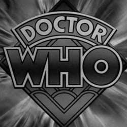

| Home The Doctors The Companions The Villains Show History |
The Original SeriesDoctor Who is a British science-fiction television programme produced by the BBC from 1963 to the present day. The programme originally ran from 1963 to 1989. It depicts the adventures of the Doctor, a Time Lord—a time-travelling humanoid alien. He explores the universe in his TARDIS, a sentient time-travelling space ship. Its exterior appears as a blue British police box, which was a common sight in Britain in 1963 when the series first aired. Along with a succession of companions, the Doctor faces a variety of foes while working to save civilisations, help ordinary people, and right wrongs. The show is a significant part of British popular culture, and elsewhere it has become a cult television favourite. The show has influenced generations of British television professionals, many of whom grew up watching the series. |
|
Kayleen Garcia |
Ann Marie Skjold |
Content derived from the Doctor Who Wikipedia. |